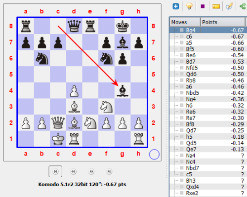

Les premiers coups de la partie illustrent les conceptions novatrices des deux joueurs de la Théorie des Ouvertures :
Avant leur 13ème coup, les Noirs peuvent sereinement envisager le plan à suivre pour le milieu de partie, car depuis le gain de tempo (12... Cb6) et le l'abandon du centre par le Fou (13. Fd3), l'initiative des Blancs s'est évanouie.
Richard Reti - Gyula Breyer
Budapest, 1916
r1bqr1k1/ppp2pbp/1n3np1/8/3P4/3B1N2/PPQBNPPP/2KR3R b - - 2 13
c7-c6 et Cf6-d5 sont sans doute les deux coups candidats à examiner dans cette position.
Breyer a en effet immanquablement dû remarquer :
Les constatations 2., 3. et 4. emportèrent la préférence de Breyer.
Après deux minutes d'analyse, Komodo 5.1r2 32bit classe les coups candidats selon des préférences sensiblement différentes. Toutefois, aussi bien 13... Fg4 (le coup préféré) que 13... a5 ou 13... Ff5 permettraient sans doute aux Blancs d'obstruer la colonne e (constatation 4. de Breyer) via 14. Ce5
La réflexion de Breyer est donc sans doute davantage ... hypermoderne que celle des ordinateurs contemporains - du moins dans des positions sans ressources tactiques immédiates.
{kind=link}
{kind=link}